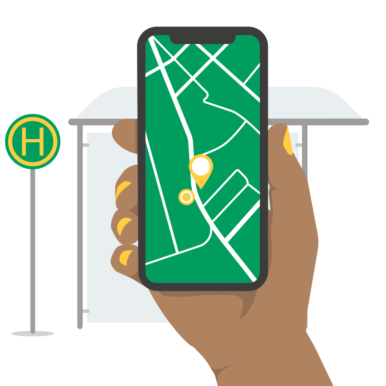

Hilf mit den aktuellen Stand zu erfassen
-

Begib dich zu einer Haltestelle in deiner Nähe
-
Beantworte die angezeigten Fragen
-
Lade deine Antworten für alle frei zugänglich hoch
Alle erhobenen Daten werden direkt auf OpenStreetMap gespeichert und sind dort für jeden frei verfügbar.
Leg jetzt los und erstell dir deinen Account.
Datenerhebung für einen besseren ÖPNV
-
Einheitliche offene Datenbasis
Um deutschlandweit Auskünfte für barrierefreie Reiserouten zu ermöglichen ist eine einheitliche Datenbasis eine Grundvoraussetzung. Durch freie Zugänglichkeit und einer standardisierten Datenerhebung ist es möglich, dass verschiedene Menschen, Projekte oder Unternehmen ihren Teil zur gemeinsamen Datenbasis beitragen können, wovon alle profitieren.
-
Verbessertes barrierefreies Routing und Navigation
Auf Basis der erhobenen Daten können Algorithmen individuell geeignete Routen berechnen. Deren Zugänglichkeit, welche insbesondere für Mobilitäts-, Seh- oder Höreinschränkte relevant ist, kann dabei bereits vor Reiseantritt analysiert, bewertet und dargestellt werden. Für den Umstieg an Haltestellen können zusätzlich hilfreiche Informationen in die Navgation mit einfließen, z.B. ob an einer Treppe ein Handlauf mit Blindenschrift vorhanden ist.
-

Ausbaupriorisierung
Mit Hilfe geeigneter Analyse-Tools lässt sich aus den erfassten Daten der Grad an Barrierefreiheit einer Haltestelle ableiten. So kann für ganze Städte und Regionen der gegenwärtige Stand des barrirefreien Ausbaus dokumentiert werden. In Kombination mit demografischen Daten, z.B. der Bevölkerungsdichte, lässt sich daraus der bedarfsgerechtere Ausbaus von Bus- und Bahnhaltestellen planen.